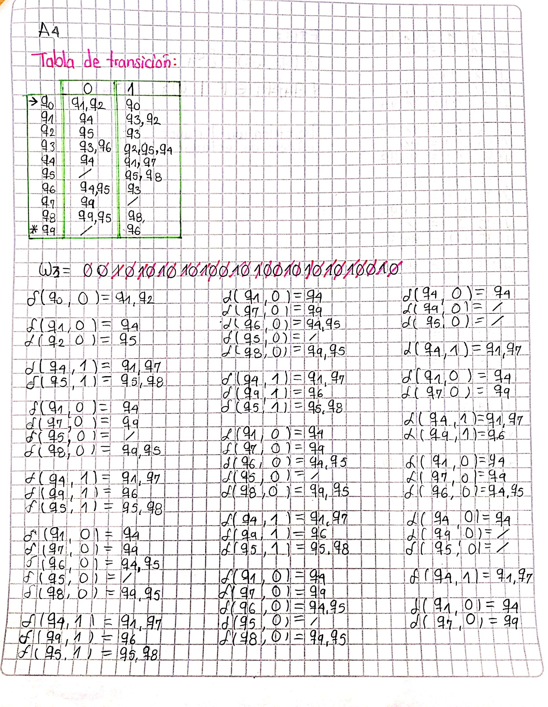
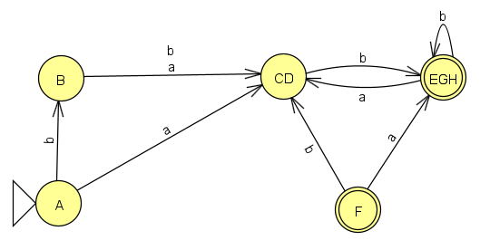

1. Fundamentación en lenguajes formales y ejercicios de aplicación con transiciones vacías. (1.0)
1.1 I am reading in English
The author Francisco Vico introduces us to the book "THEORY OF AUTOMATICS AND FORMAL LANGUAGES" with the aim of providing a comprehensive resource for the subject of Automata Theory and Formal Languages. The author acknowledges the abundance of existing books on the topic, each with its own terminology, nomenclature, and demonstrations. However, Vico's objective is to create a book that integrates ideas and exercises from other authors while unifying the different concepts. Before discussing the different concepts, it is important to know the notations used in this book

Regular Languages
The author gives a series of definitions about regular language and grammars, he mentions that:
- The alphabet is a non-empty finite set of symbols.
- Symbols are indivisible
- A string over the alphabet Σ is a finite string of Σ symbols
- When a special string has no symbols it is an empty string, and is represented by the symbol ε or λ. Even though the string is empty, it exists.
- The number of symbols in a string x is called its length, denoted by |x|. And ε being empty has a length of 0.
- Two strings X and Y can be concatenated (joined).
- The concatenation is associative, i.e. x(yz) = (xy)z As a consequence, repeated concatenations can be written without parentheses.
The regular languages are a type of formal language that can be described by regular expressions or regular grammars. Almost all characterization problems for regular languages are algorithmically decidable, which means that there is an algorithm that can solve the problem in a finite time. The following are the five most common characterization problems for regular languages:
- Emptiness problem: Given a regular language L, is the empty language (i.e., the set that contains no strings) a subset of L?
- Inclusion problem: Given two regular languages L1 and L2, is L1 a subset of L2?
- Equivalence problem: Given two regular languages L1 and L2, are L1 and L2 equivalent (i.e., they contain exactly the same strings)?
- Finiteness problem: Given a regular language L, is L finite?
- Membership problem: Given a regular language L and a string w, does w belong to L?
A grammar in regular languages is defined as a quadruple (Σ, V, S, P), where each element has a specific meaning:
- Σ (Sigma): It is the finite set of terminal symbols or alphabet. These symbols are the basic elements that form the strings of the language.
- V (Vee): It is the finite set of non-terminal symbols or variables. These symbols represent elements that can be replaced by strings of terminal or non-terminal symbols.
- S (Start symbol): It is the initial non-terminal symbol or start symbol. It represents the symbol from which the derivation of the language strings begins.
- P (Productions): It is the set of production rules or productions. Each production is a rule that defines how non-terminal symbols can be replaced by strings of terminal or non-terminal symbols.
Closure of the types of languages refers to the set of operations that can be applied to a language, resulting in a new language that is also of the same type
- Type-0 languages (recursively enumerable languages): Closed under union, intersection, concatenation, and Kleene closure, but not under complementation.
- Context-free languages: Closed under union, concatenation, and Kleene closure, but not under intersection or complementation.
- Context-sensitive languages: Closed under all five operations (union, intersection, concatenation, Kleene closure, and complementation).
- Regular languages: Closed under all five operations.
Regular expressions are a way to describe patterns in strings over an alphabet Σ. The regular expressions and the languages they represent are defined inductively as follows:
- The symbol ∅ is a regular expression that represents the empty language.
- The symbol ε is a regular expression that represents the language whose only member is the empty string, {ε}.
- For each c ∈ Σ, c is a regular expression that represents the language {c}, whose only member is the string consisting of the single character c.
- If r and s are regular expressions representing the languages R and S, then (r + s), (rs), and (r∗) are regular expressions that represent the languages R ∪ S, RS, and R∗, respectively.
Finite State automata
Automata are used to recognize words of a language. A finite automaton has a finite memory and is defined by its states, input symbols, initial state, transition rules, and acceptance criteria. A finite deterministic automaton is formally defined by a quintuple M = (Q, Σ, q0, δ, A), where Q is a finite set of states, Σ is the input symbol set, q0 is the initial state, δ is the transition function, and A is the set of terminal states. The language recognized by M is denoted by L(M). Finite automata can be represented graphically as state diagrams. A nondeterministic finite automaton is defined by a quintuple M = (Q, Σ, S, δ, A), where S is the set of initial states and δ maps a state and input symbol to a subset of states. M accepts a word w if there is at least one terminal state in the set of states reached by the transitions from the initial states. The set of words accepted by M is the language L(M).
1.2 Indagando el autómata vacío
-
La sistematización y evaluación de cadenas utilizando una herramienta informática se respalda mediante el siguiente video
https://www.youtube.com/watch?v=JSbh_DnSK8o
- Proporcione NFA-ε para el conjunto de todas las cadenas que constan de la cadena "01", la cual se repite una o más veces o para la cadena "010", la cual se repite una o más veces.
- Proporcione NFA-ε para el conjunto de todas las cadenas binarias que contienen un número impar de ceros (0) o un número de unos (1) que no es un múltiplo de tres.
2. De la gramática y los autómatas.(1.5)
2.1 Gramática de muchos tipos (0.5): Sean las siguientes gramáticas:


Click encima de la imagen para ampliar

Los árboles de las diferentes gramáticas pueden encontrarse en el siguiente link: Diagramas de gramáticas
2.2 Indagando sobre los autómatas.(0.5)
Sean los siguientes autómatas:
Entregables:
- Gramática equivalente al autómata.
- Formalismo para cada uno de los autómatas, incluyendo sus funciones de transición.
- Comprobaciones de palabras existentes (una) y no existentes (una) mediante funciones de transición y diagramas de hilos.
2.3 Funciones de salida (0.5)
Determinar las funciones de transición y la FTE de las siguientes palabras, teniendo en cuenta los autómatas propuestos:
DIAGRAMAS DE HILOS PARA LAS PALABRAS W3 Y W4:
https://drive.google.com/file/d/1lFI_p-g4-0THrMoFEJU_SV8_uo5k_xAK/view?usp=sharing
3. Minimizaciones y sistematización de gramáticas.(2.0)
3.1 Minimizando —> NFA — DFA (0.5)
Para realizar la minimización de las siguientes gramáticas se sigue el algoritmo dado en clase:
- Iniciar un conjunto Q' = Ø.
- Adicionar a Q' al estado q0.
- Por cada estado en Q', encontrar su función de transición. Si se crean nuevos estados, agregarlos a Q' hasta que no queden estados para agregar.
- Asignar estados finales. Los estados finales del DFA resultante deberían ser todos los estados contenidos en "F" (estados aceptables) en el NFA original.
- Renombrar estados.
AUTÓMATA MINIMIZADO
AUTÓMATA MINIMIZADO

AUTÓMATA MINIMIZADO
{kind=link}
AUTÓMATA MINIMIZADO
3.2 Minimizando —> DFA –- DFAmin (0.5)
Para minimizar el DFA a su mínimo DFA se usa el teorema de Jel cual consiste en el siguiente algoritmo:
- Desarrollar la tabla de pares de estados (p, q).
- Marcar pares de estados (P ∈ F) y (q ∉ F).
- Para los pares de estados no marcados, verificar δ(P,x), δ(Q, x), para luego marcar sus resultantes, según el paso 2.
- Combinar todos los pares no marcados (No distinguibles) en un nuevo DFA.


AUTÓMATA MINIMIZADO
AUTÓMATA MINIMIZADO
3.3 Programando árbol (1.0)
| Información | Datos |
|---|---|
| Lenguaje de Programación | Python |
| Sistema Operativo Base de Desarrollo | Windows 10 |
| Procesador | 32 bits o 64 bits de 1 GHz |
| Memoria RAM | 4 GB |
| Placa Base del Computador de Implementación | Gigabyte GA-EP45-DS3R |
En el enlace proporcionado, se encuentra disponible un video que detalla la explicación y el funcionamiento del software.
https://www.youtube.com/watch?v=PrYi1YHBBN8Enlace del repositorio web
https://github.com/uptc20202/ArbolesDerivacion